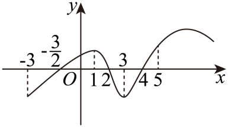

示例学校2025-2026学年度第二学期期中考试 Q9
题目
9．如图是y=f(x)的导数y=f^'(x)的图象，则下面判断正确的是（ ）

A．在(-3,1)内f(x)是增函数 B．在(3,4)内f(x)是减函数
C．在x=1时f(x)取得极大值 D．当x=4时f(x)取得极小值
答案与解析
未匹配到解析。
结构化摘要
{
"question_id": "szzx_2025_2026_g2_midterm_q009",
"answer": "BD",
"score": 6,
"score_source": "section_rule",
"score_note": "多选题：每小题6分",
"assets": [
{
"id": "img001",
"type": "image",
"origin": "source",
"rel_id": "rId7",
"source": "word/media/image1.png",
"path": "assets/szzx_2025_2026_g2_midterm_q009_image_01.png",
"original_path": "assets/szzx_2025_2026_g2_midterm_q009_image_01.png",
"preview_generated": false
}
],
"ole_objects": [],
"extraction": {
"source_paragraph_range": [
29,
32
],
"solution_paragraph_range": null,
"formula_count": 10,
"image_count": 1,
"ole_count": 0,
"quality_flags": [
"contains_images",
"contains_omml",
"missing_solution"
]
}
}